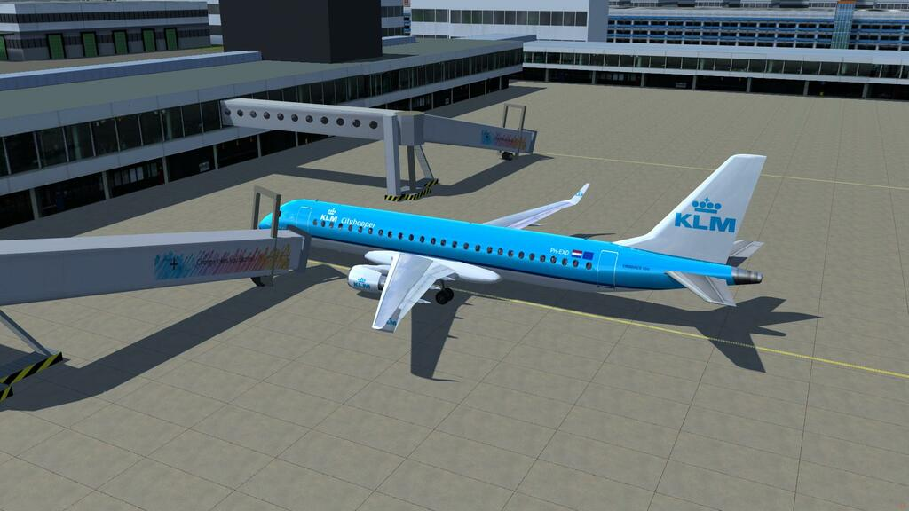
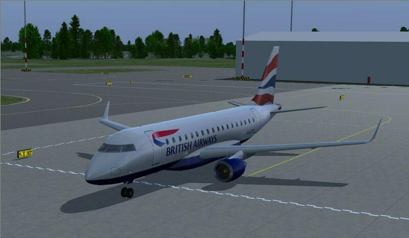
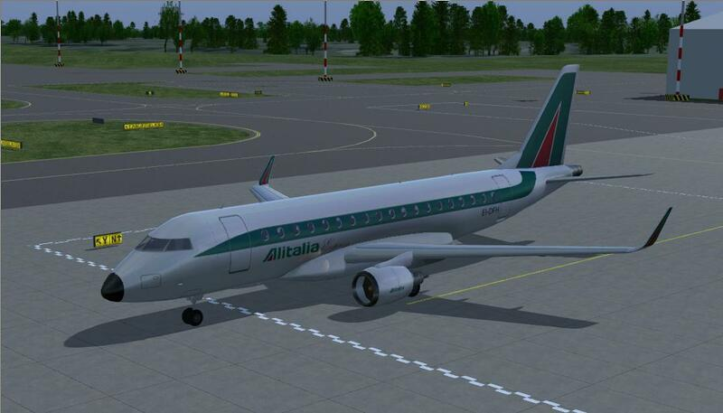
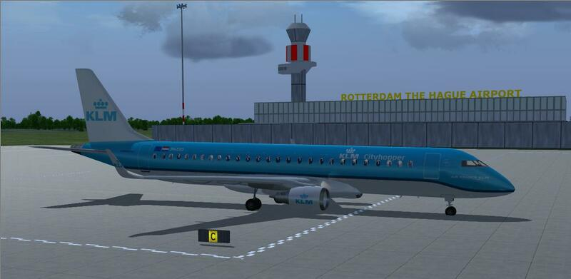
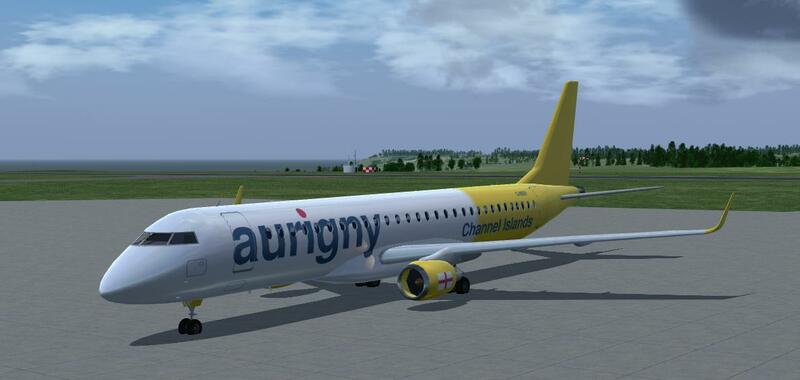
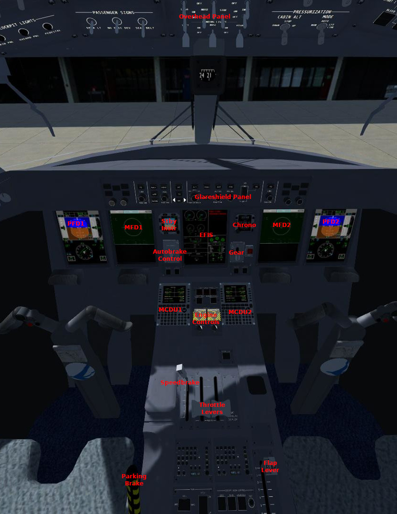
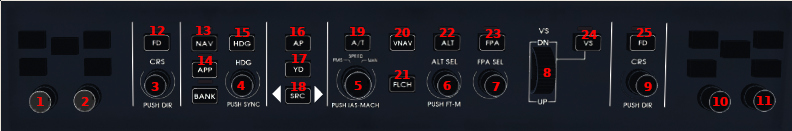
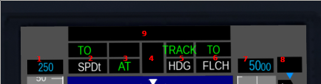

Embraer E-Jet Family for FlightGear
User Guide

Introduction
The Embraer E-Jet family is a series of narrow-body short- to medium-range
twin-engine jet airliners, carrying 66 to 124 passengers commercially,
manufactured by Brazilian aerospace manufacturer Embraer. The aircraft family
was first introduced at the Paris Air Show in 1999 and entered production in
2002. The series has been a commercial success primarily due to its ability to
efficiently serve lower-demand routes while offering many of the same amenities
and features of larger jets. The aircraft is used by mainline and regional
airlines around the world but has proven particularly popular with regional
airlines in the United States. (Source:
wikipedia).
This package for FlightGear includes the following types:
E170

The original E-Jet, first to enter production. Seats 66-78 passengers, powered
by two GE CF34-8E engines.
E175

A slight stretch of the E170, using the same wing, engines, flight deck and
systems. Seats 76-88 passengers.
E190

A further stretch of the E175, with a larger wing, more powerful GE CF34-10E
engines, improved avionics, increased range, and faster cruise speed. Seats
96-114 passengers.
E195

A slightly stretched, but otherwise identical, variant of the E190. Seats
100-124 passengers.
Lineage 1000

A luxury bizjet conversion of the E190. The lower deck is filled entirely with
an additional fuel tank, increasing the aircraft's range to a whopping 4600
nmi; the upper deck can be configured to the customer's needs, and may include
a double-sized galley, master suite with a king-size double bed and bathroom,
large flatscreen, etc. A cargo compartment is also situated on the upper deck.
Typical configurations seats 12-19 passengers and their luggage.
Flight Deck Overview

- PFD1/2: primary flight display, shows key information about the state of
the aircraft, including airspeed, vertical speed, attitude, autopilot, and
primary navigation.
- MFD1/2: multi-function display, shows navigation information and system
status.
- EFIS (EICAS): displays information about the status of the engines,
flight controls, etc., and any warnings/errors that may exist.
- Glareshield Panel (GSP), used to control the autopilot and autothrottle.
- MCDU1/2, the primary interface to the flight management system (FMS),
also used to tune the aircraft's radios (NAV1/2, COM1/2, XPDR, TCAS, ADF1/2)
- Engine Controls, used to start and stop the engines. The startup process
is highly automated, so usually, it is enough to put the knobs in the right
position and watch the aircraft start itself.
- Speedbrake and Throttle Levers function as usual.
- Flap Lever controls flaps and leading-edge slats. There are 6 settings;
flaps 1 through 4 are used for takeoff and approach, flaps 5 and 6 (FULL) for
landing. Selecting flaps 5 or 6 automatically arms the ground spoilers. Note
that use of flaps 6 is not authorized for CAT-II landings.
- Parking Brake functions as usual.
MFD's and CCD's
The real E-Jet uses a device known as the CCD (Cursor Control Device) to
provide a point-and-click style GUI on the EFIS screens, particularly the MFD.
The CCD consists of a trackpad, an "enter" button, three screen selector
buttons, and a two-ring twist knob for data entry. The pilot can use the screen
selector to move a cursor between PFD, MFD and EICAS screens; the touchpad
moves the cursor within the selected screen; the "enter" button selects
on-screen GUI elements; and the twist knob serves as a dynamic dial for various
inputs, such as map range etc.
Because we cannot provide a physical CCD in flightgear, the FlightGear E-Jet
emulates this functionality by allowing you to click directly onto the MFD, and
using the mouse scroll wheel to emulate the twist knob. Specifically, the
mapping works as follows:
- Mouse click: position CCD cursor on clicked screen (currently only MFD is
supported), at the position of the click, and then click the CCD "enter"
button
- Scroll wheel: twist outer ring of CCD data entry knob.
- Shift + scroll wheel: twist inner ring of CCD data entry knob.
Autopilot
Glareshield Panel Controls

Captain-side:
- 1: QNH knob. Rotate: select QNH. Push: select standard QNH
(1013 hPa / 29.92 inHg). Rotate ring: switch hPa / inHg.
- 2: Minimums knob. Rotate: select minimums. Rotate ring:
switch RA (radio) / BARO (barometric) minimums.
- 3: Course knob. Rotate: select course for NAV1. Push: select
direct course for NAV1.
- 12: FD button. Enable/disable Flight Director.
First Officer-side:
- 10: QNH knob. Rotate: select QNH. Push: select standard QNH
(1013 hPa / 29.92 inHg). Rotate ring: switch hPa / inHg.
- 11: Minimums knob. Rotate: select minimums. Rotate ring:
switch RA (radio) / BARO (barometric) minimums.
- 9: Course knob. Rotate: select course for NAV2. Push: select
direct course for NAV2.
- 25: FD button. Enable/disable Flight Director.
Shared controls:
- 4: Heading knob. Rotate: move heading bug. Push: set heading bug to
current heading.
- 5: Speed knob. Rotate: select target speed. Push: switch KIAS / Mach.
Rotate ring: switch manual selection / FMS managed speed.
- 6: Altitude knob. Rotate: select target altitude in 100ft increments.
Shift-rotate: select target altitude in 1000ft increments. Push: toggle ft/m
(NOT IMPLEMENTED YET).
- 7: FPA knob. Select flight path angle when in FPA mode.
- 8: V/S wheel. Select vertical speed when in VS mode.
- 13: NAV button. Select NAV lateral mode. When navigation source is FMS1
or FMS2, engage LNAV mode (track flight plan); when navigation source is NAV1
or NAV2, engage VOR mode (track VOR radial).
- 14: APP button. Arms lateral and vertical approach mode: lateral mode LOC
(localizer) is armed, and becomes active when the localizer is captured;
vertical mode GS (glideslope) is armed, and becomes active when the
glideslope is intercepted. Before intercept, the currently selected lateral
and vertical modes remain active.
- 15: HDG button. Selects the lateral HDG mode; if HDG mode is already
active, selects "wings level" mode instead.
- 16: AP button. Engages / disconnects the autopilot.
- 17: YD button. Turns the Yaw Damper on or off. In normal flight, the yaw
damper should always be on.
- 18: SRC button. Switches navigation source between the captain's side
(NAV1 / FMS1) and the first officer's side (NAV2 / FMS2).
- 19: A/T button. Engages / disengages autothrottle.
- 20 VNAV button. Turns VNAV (vertical navigation) on or off. In VNAV mode,
the FMS automatically selects vertical modes for the autopilot to match the
vertical profile calculated from the current flightplan. The aircraft will
not, however, climb or descend through the selected altitude.
- 21 FLCH button. Selects FLCH (Flight Level Change) vertical mode. If the
selected target altitude is higher than the current altitude, FLCH will
command climb thrust, and speed-with-pitch, in order to achieve the optimal
climb rate to the target altitude. If the selected target altitude is lower
than the current altitude, FLCH will command idle thrust, and
speed-with-pitch, in order to achieve an optimal descent path. In both cases,
the selected airspeed will be maintained. If A/T is off, the pilot is
responsible for setting appropriate thrust for the climb or descent.
- 22 ALT button. Selects ALT hold mode. This will also set the target
altitude to the nearest multiple of 100 ft of the current altitude. Note that
you do not normally need this button, because in all climb and descent modes,
the aircraft automatically levels off at the target altitude, and switches to
ALT mode by itself.
- 23 FPA button. Selects FPA mode (flight path angle). When this button is
pushed, the aircraft will hold the current flight path angle until
intercepting the target altitude; by turning the FPA knob (7), the flight path
angle can be adjusted.
- 24 VS button. Selects VS mode (vertical speed). When this button is
pushed, the aircraft will hold the current vertical speed until
intercepting the target altitude; by turning the VS wheel (8), the flight path
angle can be adjusted.
PFD Autopilot Mode Annunciations

- 1 Speed target. Displays the current speed target in KIAS or Mach. In
FMS Managed Speed mode, this display will be magenta; in Manual Speed mode,
it will be blue.
- 2 Autothrottle Mode. Upper = active, lower = armed. SPDt means speed
with throttle, SPDe means speed with elevator. TO, GA and HOLD are special
modes for takeoff and go-around.
- 3 AP and AT engagement. Upper = AP engaged, lower = AT engaged.
- 4 Nav source. Left = captain side, right = FO side. (NOT IMPLEMENTED
YET).
- 5 Lateral mode. Upper = active, lower = armed. TRACK = track runway
heading (takeoff / go-around), HDG = track selected heading, VOR = track VOR
heading, LOC = track ILS localizer, LNAV = track FMS route.
- 6 Vertical mode. Upper = active, lower = armed. TO = takeoff, GA =
go-around, FLCH = flight level change, FPA = flight path angle, VS = vertical
speed, GS = ILS glideslope. If VNAV is active, modes are selected by the FMS,
and labelled VTO, VGA, VFLCH, VFPA. (VNAV never selects VS, so VVS does not
exist; VNAV should be disabled before arming APPR, so VGS is not a thing
either).
- 7 Altitude target. In VNAV mode: the altitude to which you are cleared to
climb or descend. VNAV will follow the calculated profile, but never climb
or descend past this altitude. In non-VNAV mode: the altitude at which to
level off.
- 8 FPA / VS target. The currently selected vertical speed or flight path
angle. In VNAV mode, the FMS will set this.
- 9 Autoland annunciation. Left, white = armed, right, green = active.
APPR1 means CAT-I autoland, APPR2 means CAT-II autoland. (NOT FULLY
IMPLEMENTED YET: conditions must be met for either autoland mode to arm and
activate).
Basic Autopilot Usage
Under normal conditions, you will only use the following procedures:
- Before takeoff: confirm that the autopilot is in TO mode (push the TOGA
button, "Q" key on the keyboard, if not). Select your initial climb altitude
using the ALT SEL knob. If flying an FMS route, push NAV to arm LNAV mode;
otherwise, set the heading bug to the runway heading, and push HDG to arm HDG
mode. Select an appropriate airspeed target for the departure using the SPD
SEL knob (typically between 180-220 kts).
- Line up on the runway, set 40% thrust, wait for the engines to stabilize,
then set takeoff thrust. At VR, pull up, retract gear on positive climb,
retract flaps as appropriate, enable AP and AT. Once sufficient altitude is
achieved, the autopilot will switch the lateral mode to LNAV or HDG, and the
vertical mode to FLCH, and the autothrottle will switch from TO to SPDe. The
aircraft now climbs to the selected altitude at climb thrust.
- In flight, the procedure for climbing or descending to a different altitude
is: 1. select target altitude 2. push FLCH. This will select appropriate
modes for both the AT and the AP, and the aircraft will level off
automatically.
- To speed up or slow down, simply turn the SPD SEL knob.
- When passing FL290, the aircraft will automatically switch between KIAS and
Mach speed target selection.
- To deviate from the flight plan and just fly a heading, push the HDG SEL knob
to synchronize the heading bug with the current heading, then push the HDG
button to switch to HDG mode, and then rotate the HDG SEL knob to turn to the
desired heading. Pushing NAV will revert back to LNAV mode, and the aircraft
will immediately turn to navigate to the current waypoint.
- When approaching your destination, make sure you have the correct ILS
frequency selected on NAV1; fly on a suitable intercept heading (either using
the FMS flightplan, or manually in HDG mode) and altitude, then push APP to
arm LOC and GS mode. If all goes well, the LOC and GS modes will
automatically engage when the localizer and glideslope are intercepted.
- Once established on the glideslope, extend landing gear, set flaps as
appropriate, and reduce speed with the SPD SEL knob. The APPR2 annunciations
should appear on the top of the PFD, first the white one, then the green, and
the aircraft should then land itself automatically. The autothrottle should
disengage on main gear touchdown, the autopilot may require manual
disconnecting.
Advanced Autopilot Usage: VNAV
In VNAV mode, the autopilot automatically attempts to follow a vertical profile
derived from the active flight plan and configured cruise altitude. However, it
will never climb or descend beyond the selected target altitude, and if at any
point it levels off at the target altitude, it will hold that altitude even
when the target altitude is changed, until one of two things happens:
- A waypoint is reached that triggers the VNAV logic to initiate another
altitude change (typically, this is a waypoint with an altitude restriction)
- The pilot pushes the FLCH button to manually force the autopilot into VFLCH
mode. The autopilot will then climb or descend in FLCH mode until
intercepting the profile, and then switch to VFPA or VALT mode.
It is highly recommended to disable VNAV when trying to intercept the ILS,
because any VNAV-induced autopilot mode changes will disengage / disarm APP
mode.
Advanced Autopilot Usage: FMS Managed Speed
In FMS Managed Speed mode, the FMS will automatically select speed targets
appropriate for the current flight phase, and according to speed restrictions
on the flight plan. In order for this to work, the following things should be
configured correctly:
- An active flight plan (via Route Manager, or the RTE and FPL pages in the
MCDU)
- Performance settings for all flight phases (via the E-Jet family >
Performance Config menu, or via the PERF INIT and PERFORMANCE > TAKEOFF and
PERFORMANCE > LANDING pages in the MCDU)
Managed speed will use the following logic:
- During takeoff, target V2 until reaching V2, then target V2 + 10 until
reaching the final segment altitude, then target VFS (final segment speed),
then departure speed; when vertical AP mode switches to FLCH, target climb
speed.
- During climbs, target climb speed (default: 280 kts), but respect low
altitude limit (default: 250 kts below 10,000 ft / FL100), and interpolate
speed between limit and limit + 2000 ft to produce a gradual speed-up that
does not arrest the climb entirely. At FL290, switch to climb Mach (default:
Mach .73).
- Once levelled off after reaching cruise altitude, speed up to configured
cruise speed (default: 300 kts below FL290, Mach .77 above FL290).
- When descending, select descent speed (default: 290 kts / Mach .77), but
respect low-altitude limit (default: 250 kts below 10,000 ft / FL100), using
the same interpolation as for the climb.
- For the approach (within 15 nmi from the destination), reduce speed to
initial approach speed.
- When flaps are set during the approach phase, reduce speed for the next flap
setting, down to final approach speed (Vref + 5 or Vref + 10).
- Speed restrictions in the flight plan overrule the above when they are lower
(e.g., a speed restriction of 220 KIAS on the departure will prevent the
aircraft from speeding up to 250 KIAS for the climb).
Flight Controls
Thrust Reversers
Thrust reversers may only be deployed (DEL key) after touchdown, and with the
thrust lever in the IDLE position.
For a normal landing, deploy reversers immidately after main landing gear
touchdown, gently forward thrust lever to full reverse; retard at 60 kts,
cancel reversers at 40 kts.
For a rejected takeoff, full reverse thrust may be used until the aircraft has
come to a full stop.
Flaps
The flap lever controls flaps, slats, and ground spoilers. Settings 1 through 4
are for takeoff and approach, and extend flaps and slats. Settings 5 and FULL
(6) are for landing, and additionally arm ground spoilers. Settings 4 and 5 are
identical, except that flaps 5 arms ground spoilers while flaps 4 does not
(because flaps 4 is for takeoff / approach, but flaps 5 is for landing).
Speedbrake
The speedbrake lever controls spoiler deployment to increase drag and reduce
lift in flight, typically to achieve a rapid descent. The spoilers also double
as ground spoilers, deploying when the following conditions are met:
- Speedbrake lever is in the "up" position (i.e., no manual speedbrake
deployment).
- Flap lever is in position 5 or 6/FULL.
- Weight on wheels (WOW).
- Airspeed 60 kts or more. Ground spoilers automatically retract when airspeed
drops below 60.
The speedbrake lever in this simulation has 3 positions (up, 1/2, full), which
you can cycle with the Ctrl-B key.
Autobrakes
The autobrake knob is used to configure automatic braking for landing and
rejected takeoff. It has the following positions:
- RTO, used for rejected takeoff. In this position, the autobrake system
will apply maximum brakes when there is weight-on-wheels, and the thrust
levers are retarded to the idle position or the thrust reversers are
deployed. Brakes remain applied until the pilots input brakes (switching to
manual braking), or wheel rotations speed reaches zero, or the autobrake knob
is rotated to the "OFF" position.
- OFF: no autobrake whatsoever.
- LOW: at touchdown, apply brakes to achieve a constant deceleration of
0.175g until manual brake input, wheel speed < 60 kts, or autobrake knob
turned into OFF position
- MED: at touchdown, apply brakes to achieve a constant deceleration of
0.3g until manual brake input, wheel speed < 60 kts, or autobrake knob turned
into OFF position
- HI: at touchdown, apply maximum brakes until manual brake input, wheel
speed < 60 kts, or autobrake knob turned into OFF position
In the LOW and MED modes, deploying reversers will reduce brake wear and
heating, but will not change the required landing distance or deceleration
rate.